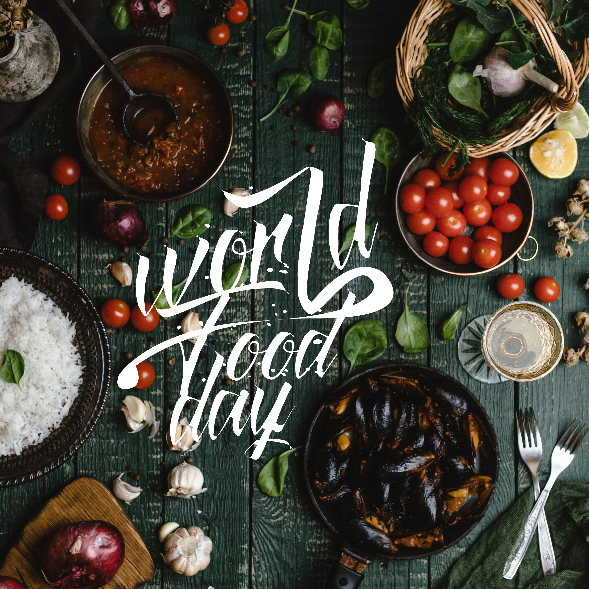
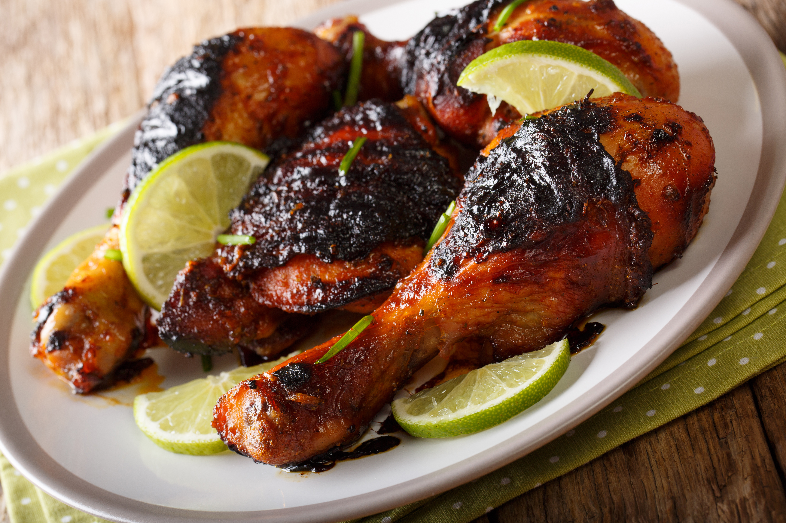

Food stories verden rundt

Bliv inspireret af Food stories fra hele verdenen
Mad handler ikke bare om at spise, men at alle retter har hver sin historie om traditioner, kulturer, råvarer og mennesker.
På food stories tager vi dig med på en smagfuld rejse rundt i verden, hvor vi dykker ned i de autentiske fortællinger bag nogle af de mest velkendt retter.
Her kan du opleve spændende madoplevelser, lære om forskellige køkkener og opdage, hvordan unikke ingredienser og tilberedningsmetoder skaber smag.

Mad kulturen i Vietnam's bjerge
16/07/2026
Turen til Vietnam var yderst fantastisk, men det bedste var helt klart madkulturen. Jeg tog op i bjergene i den nordlige del af Vietnam. Selve turen derop var fantastisk, 5-6 timer i bus fra Hanoi til Sapa, med flotte omgivelser hele vejen op. Suppen “Pho”, har givet mig en ny form for madoplevelsen. Smagen af Pho har en dyb, aromatisk og frisk blanding af umani.

Min kulturhistorisk madoplevelse af Indiansk mad
16/05/2026
Har du nogensinde prøvet indisk mad? hvis ikke, så læs videre her. Jeg er selv fra Indian og jeg har prøvet forskellige indiske retter. I Indian bruger man mange forskellige krydderier som gør maden til at smag upåklageligt, og derfor vil jeg gerne dele min madoplevelse og min Indisk kultur.

Jamaicansk style Jerk kylling
5/08/2025
Madkulturen i det jamaicanskekyster har givet mig inspiration. Jerk chicken har en fantastisk smag, og sjovt at tilberede samtidig med har det givet mig oplevelse for livet, at prøve andre madkulturer.